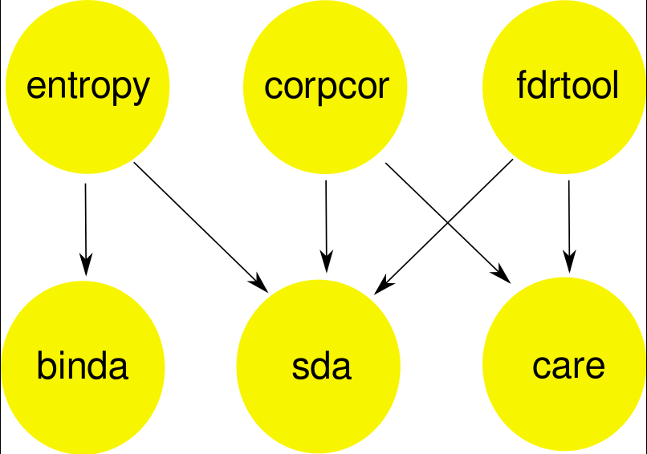
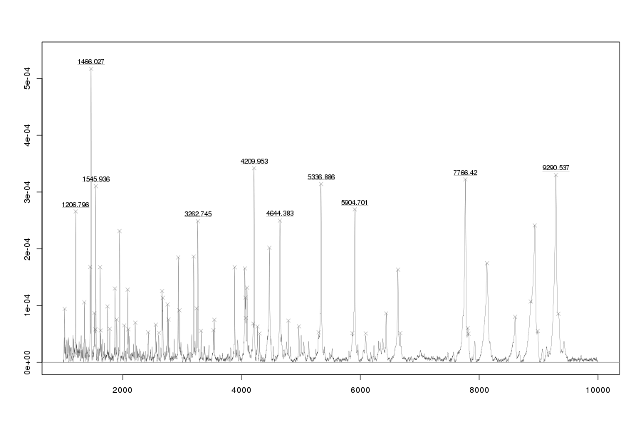
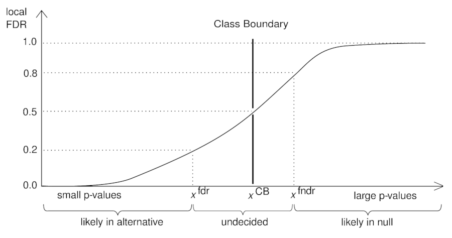
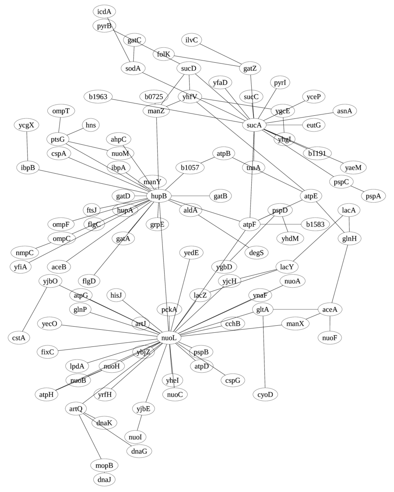

{kind=link}
Timeline of methods developed in our group (click image for a larger view)
Our main research topic is the development of biostatistical and bioinformatics methods for the analysis high-dimensional biomolecular data. Correspondingly, we are interested in:
- High-dimensional data analysis
- Methods for Transcriptomics and proteomics
- Gene ranking and biomarker discovery
- Signal identification and FDR
- Graphical models and biological networks
- Molecular evolution
For reproducibility we make available our methods in free software, mostly for the R platform.
See also the ISI ResearcherID and Google Scholar pages.Please find below a representative selection of our publications. For a complete list of publications and for current preprints see the publications of Korbinian Strimmer and the web pages of the other group members.
High-dimensional data analysis:

Overview of our toolbox for analyzing high-dimensional data
(click image for a larger view)
We are interested in methodology for high-dimensional
inference, including Bayesian learning, regularization and shrinkage methods. We study multiple testing
approaches (such as false discovery rates and higher criticism), are interested in model and variable selection for regression and classification, and in computationally effective algorithms for
large-scale data. Our methods are implemented in a toolbox for high-dimensional data analysis:
{kind=link}
- sda, care, binda: high-dimensional regression and classification with variable selection,
- corpcor, entropy: empirical Bayes and shrinkage estimation, and
- fdrtool: false discovery rate and higher criticism.
A common feature of our R packages is the avoidance of computationally expensive procedures and preference on scalable algorithms with low complexity. Specifically, we rely on analytic approximation where possible (e.g. for optimizing tuning parameters) and also use effective analytic model selection strategies (higher criticism, CAR and CAT scores etc.). This toolbox is used, e.g., in our software for gene network analysis (GeneNet), gene ranking (st) and mass spectrometry (MALDIquant).
Transcriptome and proteome analysis:

Example of a protein mass spectrum
(click image for a larger view)
We are interested in statistical bioinformatics approaches
to analyze gene expression and proteomics data.
To this end we have developed a versatile platform for computational mass spectrometry. Another current interest is the analysis of RNA-Seq data.
{kind=link}
-
MALDIquant: a versatile R package for the analysis of
mass spectrometry data.
S. Gibb and K. Strimmer. 2012.
Bioinformatics 28: 2270-2271.
(arXiv:1203.5885) -
Analysis of proteomic data using MALDIquant.
S. Gibb and K. Strimmer. 2011.
Proceedings of the 8th International Workshop on Computational Systems Biology, WCSB 2011 (June 6-8, 2011, Zurich, Switzerland), pp. 49-52. -
A general modular framework for gene set enrichment analysis.
M. Ackermann and K. Strimmer. 2009.
BMC Bioinformatics 10: 47. -
Partial least squares: a versatile tool for the analysis of
high- dimensional genomic data.
A.-L. Boulesteix and K. Strimmer. 2007.
Briefings in Bioinformatics. 8: 32-44. -
Predicting transcription factor activities from combined analysis
of microarray and ChIP data: a partial least squares approach.
A.-L. Boulesteix and K. Strimmer. 2005.
Theor. Biol. Med. Model. 2: 23. -
Identifying periodically expressed transcripts in microarray time series
data.
S. Wichert, K. Fokianos, and K. Strimmer. 2004.
Bioinformatics 20: 5-20.
Corrigendum. 2008. Bioinformatics 24: 2274.
Gene ranking and biomarker discovery:

CAR regression models for diabetes data
(click image for a larger view)
We are interested biomarker discovery and have recently proposed
the CAT and CAR scores for ranking of correlated genes. In addition we introduced
the shrinkage t statistic, a regularized t-score useful in high-dimensional
data analysis with small samples:
-
A novel algorithm for simultaneous SNP selection in
high-dimensional genome-wide association studies.
V. Zuber, A. P. Duarte Silva, and K. Strimmer. 2012.
BMC Bioinformatics 13: 284.
(arXiv:1203.3082) -
High-dimensional regression and variable selection using CAR scores.
V. Zuber and K. Strimmer. 2011.
Statist. Appl. Genet. Mol. Biol. 10: 34.
(arXiv:1007.5516, original bepress version) -
Gene ranking and biomarker discovery under correlation.
V. Zuber and K. Strimmer. 2009.
Bioinformatics 25: 2700-2707.
(arXiv:0902.0751) -
Accurate ranking of differentially
expressed genes by a distribution- free shrinkage
approach.
R. Opgen-Rhein and K. Strimmer. 2007.
Statist. Appl. Genet. Mol. Biol. 6: 9.
(original bepress version, typographic corrections)
Signal identification and FDR:

Local FDR thresholds and natural class boundary
(click image for a larger view)
We have developed statistical approaches for detection of signal
in high-dimension genomic data and for multiple testing using
false discovery rates (FDR):
{kind=link}
- B. Klaus and K. Strimmer. 2013.
Signal identification for rare and weak features: higher criticism
or false discovery rates?
Biostatistics 14: 129-143.
(arXiv:1112.2615) -
Learning false discovery rates by fitting sigmoidal threshold functions.
B. Klaus and K. Strimmer. 2011.
Journal de la Société Française de Statistique 152: 39-50.
(arXiv:1104.5414) -
Feature selection in omics prediction problems using cat scores and false non-discovery rate control.
M. Ahdesmäki and K. Strimmer. 2010.
Ann. Appl. Stat. 4: 503-519.
(arXiv:0903.2003) -
A unified approach to false discovery rate estimation.
K. Strimmer. 2008.
BMC Bioinformatics 9: 303.
(typographic corrections) -
fdrtool: a versatile R package
for estimating local and tail area- based false discovery rates.
K. Strimmer. 2008.
Bioinformatics 24: 1461-1462.
Graphical models and biological networks:

Entropy-based gene association network
(click image for a larger view)
In our group we have developed a series of algorithms using graphical
models for learning large-scale gene association networks from high-throughput
data:
{kind=link}
-
Introduction to graphical modelling.
M. Scutari and K. Strimmer. 2011.
Chapter 11 in: M. P. H. Stumpf, D. J. Balding, and M. Girolami (eds.). Handbook of Statistical Systems Biology. Wiley, Chichester, UK, pp. 237-254.
(arXiv:1005.1036) -
Entropy inference and the James-Stein estimator, with application
to nonlinear gene association networks.
J. Hausser and K. Strimmer. 2009.
J. Mach. Learn. Res. 10: 1469-1484.
(arXiv:0811.3579) -
From correlation to causation networks: a simple approximate
learning algorithm and its application to high-dimensional plant
gene expression data.
R. Opgen-Rhein and K. Strimmer. 2007.
BMC Syst. Biol. 1: 37. -
Learning causal networks from systems biology time course
data: an effective model selection procedure for the
vector autoregressive process.
R. Opgen-Rhein and K. Strimmer. 2007.
BMC Bioinformatics 8 Suppl. 2: S3. -
Inferring gene dependency networks from genomic longitudinal data:
a functional data approach.
R. Opgen-Rhein and K. Strimmer. 2006.
REVSTAT 4:53-65. -
Reverse engineering genetic networks using the GeneNet package.
J. Schäfer, R. Opgen-Rhein, and K. Strimmer. 2006.
R News 6/5:50-53. -
A shrinkage approach to large-scale covariance matrix
estimation and implications for functional genomics.
J. Schäfer and K. Strimmer. 2005.
Statist. Appl. Genet. Mol. Biol. 4: 32.
(original bepress version) -
An empirical Bayes approach to inferring large-scale gene association
networks.
J. Schäfer and K. Strimmer. 2005.
Bioinformatics 21: 754-764.
Molecular evolution:

Reversible jump MCMC estimate of population size
(click image for a larger view)
One of our first research interests were methods for
phylogenetic analysis and population genetics using sequence data:
-
Inference of demographic history from genealogical trees using reversible
jump Markov chain Monte Carlo.
R. Opgen-Rhein, L. Fahrmeir, and K. Strimmer. 2005.
BMC Evol. Biol. 5: 6. -
APE: Analyses of phylogenetics and evolution in R language.
E. Paradis, J. Claude, and K. Strimmer. 2004.
Bioinformatics 20: 289-290. - Inferring
confidence sets of possibly misspecified gene trees.
K. Strimmer and A. Rambaut. 2002.
Proc. R. Soc. Lond. B 269: 137-142. -
Exploring the
demographic history of DNA sequences using the generalized skyline plot.
K. Strimmer and O. G. Pybus. 2001.
Mol. Biol. Evol. 18: 2298-2305. -
Likelihood mapping: a simple method to visualize phylogenetic content of a sequence
alignment.
K. Strimmer and A. von Haeseler. 1997.
Proc. Natl. Acad. Sci. USA 94: 6815-6819. -
Quartet puzzling: a quartet maximum likelihood method for reconstructing
tree topologies.
K. Strimmer and A. von Haeseler. 1996.
Mol. Biol. Evol. 13: 964-969.
(publisher PDF is defective - instead use this scan)
Conferences:
Our group was coorganizer of the workshop
Complex Stochastic Systems in Biology and Medicine 2004 in Munich and we have hosted the Computational Systems Biology (WCSB 2008) conference in Leipzig. More recently,
we helped to organize the life science session
at GOCPS 2010.